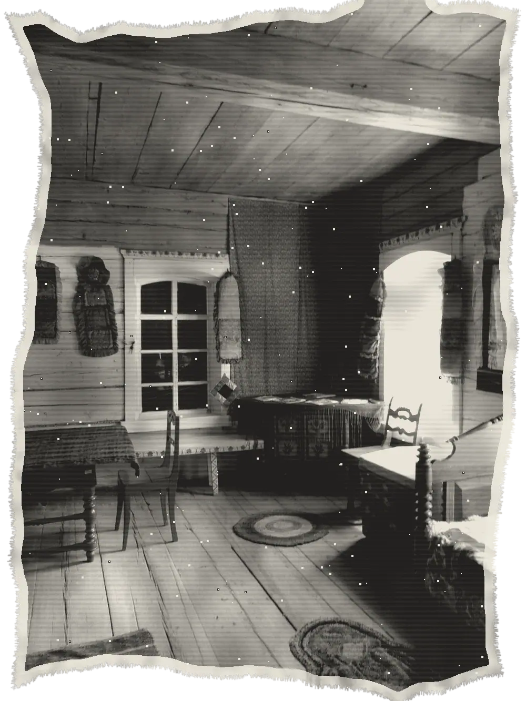
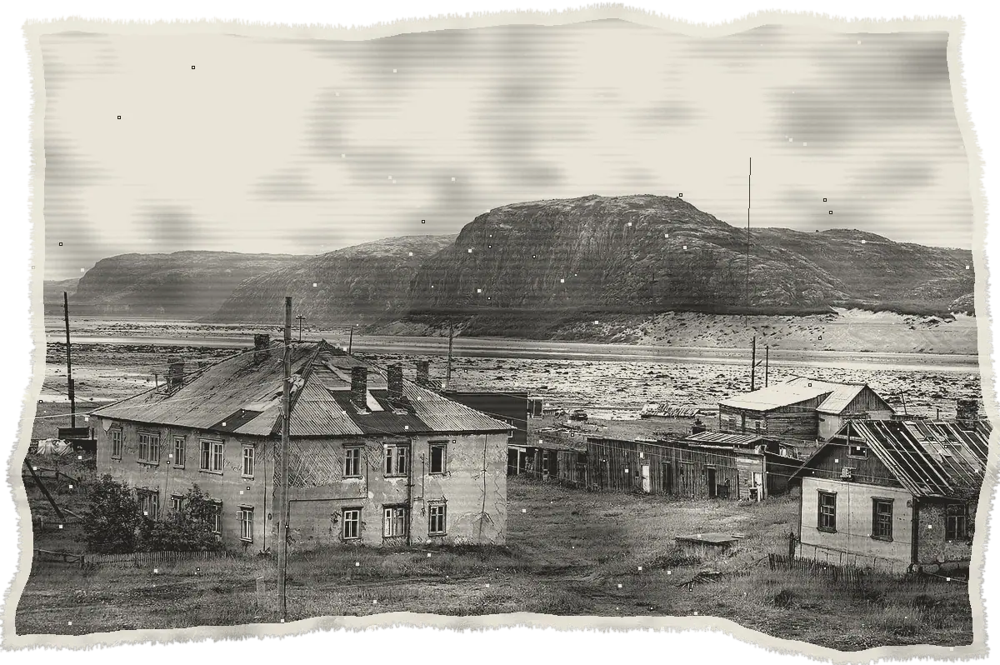

VOL. II · PLATE M · 01 / 06
THE EMPTY HOUSE
What the rite does to a house, and what the census says about empty ones
The house at a death, the coffin as a house, three studies of houses and settlements that people are leaving, the state’s count of villages with no registered residents, and what these can and cannot say together.
Recorded 19th–20th centuries; census figures 2002–2010 · Eastern Slavic traditions (corpus partly outside Russia); Russian Federation (census) · Eastern Slavic folk custom and Orthodox practice
PART I · THE HOUSE AT A DEATH
A house that has been broken
Maria Andryunina’s survey of Ukrainian, Belarusian, western Russian and Polish funeral rites reports that at a death doors and windows were opened and holes made in the roof or ceiling, so that death could come in and the soul go out. By her account the house was then treated as broken. Its sacred boundaries were annulled, and an unsettled soul could haunt it, which made it dangerous for the living.
The corpus matters. The rites in that article come from the western and southern fringes of the Eastern Slavic world and from Poland, and the plate does not offer them as a single Russian custom. The same article reports the reverse for new buildings: a newly built house counted as incomplete until the first death within it.
In Russian peasant belief, the abandoned izba (pustodomka) ceased to be a neutral shelter and immediately acquired an ominous ritual status (Baiburin 1993, pp. 165–172). Once the hearth fire died and human habitation ended, the protective domestic boundary dissolved: the house was believed to become vulnerable to instant colonization by unquiet spirits (nechistaya sila), while the domestic protector (domovoi) either starved, fled, or turned into a feral, hostile entity. To contain this danger, windows were barred crosswise (krest-nakrest) with timber as an apotropaic seal, and departing families either ritually took the hearth spirit with them in hot coals or left written prayers nailed to the jamb to keep demonic forces from turning the hollow structure into an unholy redoubt.

PART I · THE WINDOW
The window
Jelena Lewkijewskaja’s study of the window in the traditional culture of the Eastern Slavs treats it as a ritual entrance and exit between this world and the other. In funeral rites and in legends about death it is the route by which the souls of the dead, and mythological figures, enter and leave the house. Throwing something out of a window is a way of disposing of a dangerous or impure thing. In the same tradition a house without windows is the dwelling of someone alien, a being from another world.
Put beside the open windows of the deathbed, this gives a dwelling whose openings are working parts of the rite. The study is five pages long and generalises across all the Eastern Slavs, and only its abstract was available to the atlas. It frames the question; it does not describe any one village.
PART II · THE COFFIN AS A HOUSE
The coffin as a house
Anna Plotnikova’s essay on the earthly places of death starts from the Slavic idea of death as a passage to another world, where the dead acquire a home. The coffin, the grave and the graveyard are read as that home’s earthly forms. A coffin is sometimes built like a house, with window openings, and its inside can copy a living home: an icon corner, bedding, everyday things. Funeral laments call it a cold, dark house without windows, and some words for ‘coffin’ derive from the word for ‘house’.
On the same reading the dead remain tied to the home they left, and funeral customs work at separating them from it, by changing the route out of the house or by removing the dead person’s belongings. The essay covers Slavic traditions broadly. Which of these details are recorded for Russian regions has not yet been traced, and the bibliographic record for the essay is incomplete (see the source note).
M / LEAVING A HOUSE
A written prayer left in a house that is being abandoned, 2015–2017
Andrei Moroz, a folklorist, describes three cases he came across in fieldwork in 2015, 2016 and 2017, and a hypothesis drawn from them. In July 2015 an informant in the Velsk district of Arkhangelsk region showed the expedition of the Russian State University for the Humanities a village where a grass fire had burned all the houses except two. He said that in the house of an absent neighbour he had found handwritten sheets of a protective prayer lying on a sideboard, and that the fire had turned aside at that house. Moroz did not see these sheets, since the informant’s wife refused to show them, but at the house he saw two sheets of copied prayers on a bench. In July 2016 a Higher School of Economics expedition in the Zlynka district of Bryansk region, which lies in the Chernobyl contamination zone, was shown an emptied house sold to the state, with a floor taken up and the stove half fallen, where a small note with a short protective formula lay on a corner table in the kitchen. In July 2017 Moroz and colleagues searched abandoned houses in Malaya Shalga, Kargopol district, and found in one a stitched notebook with a herdsman’s spell, on the ledge of the cupboard that divides the room.
What the three had in common, he says, was that the houses were left for good or for a long time, that a handwritten sacred text lay in the open, that each text had the stated function of a charm, and that each lay in the middle of the living part of the house, near the cross-beam (matitsa) that divides it. He ties the practice to the migration of villagers to towns and the use of village houses as summer homes, and he adds that two summer residents in Sudroma kept charms against thieves in hidden places by the door. He says openly that the practice may be new, that the answers for the Chernobyl house are unclear, and that how widespread it is has not been investigated, since no interviews have been done with people who leave their houses for long periods (the article, in the journal Kultura slavian i kultura evreev: dialog, skhodstva, razlichiia, 2019).
M / LIVING IN A DYING VILLAGE
A forest settlement seen by its older residents, 2018
T. V. Zhigaltsova, a psychologist, mapped how older residents see the logging settlement of Komsomolsky in the Velsk district of Arkhangelsk region, from 32 questionnaires and 10 interviews with people aged 50 and over. The settlement is called abandoned in the title, yet people still live in it, and the article says that most respondents wanted to move and all called their stay forced, while describing the settlement as their ‘life’, ‘birthplace’ and ‘home’. Places that awoke pity included the empty school (28.1% of answers), abandoned houses (15.6%) and the hospital (12.5%); among places that cause shame, the unsanctioned rubbish dump had 21%.
The cemetery appears in the answers twice. One respondent named it among the settlement’s sad places together with ‘the dying’ of the settlement, and the shame list includes ‘abandoned graves in the cemetery’; one person writes that they would move to ‘the graves of ancestors’, near relatives. The map places the cemetery and the dump outside the settlement’s physical bounds, in the zone of negative feeling. This is one settlement and a small sample, the questionnaire design is the author’s, and the article does not ask what the residents believe about the dead; it supports only that, in one northern settlement, an untended grave counts as part of what is felt to have gone wrong.
PART III · THE UNINHABITED VILLAGE
Counting the empty village
| Report | Figure | What is counted |
|---|---|---|
| TASS, 16 Dec 2011, on the official 2010 census report | 19,400 villages without inhabitants, 48% more than at the previous census | Villages that exist de jure with no registered residents |
| OSW, Warsaw, 21 Dec 2011 | 134,000 villages in total, 8,500 fewer than in 2002 | Settlements recorded as villages; the report attributes the fall to villages left with no residents and to the merging of administrative units |
| RTE, 6 Apr 2011, citing the head of Rosstat | Uninhabited villages up from 13,000 to 19,400; 36,200 villages with fewer than ten residents | Residents per village, 2002 and 2010 |

PART IV · WHAT THE PARTS CAN AND CANNOT SAY
Evidence, kept apart
| Part | Evidence | Corpus | What it can show | What it cannot show |
|---|---|---|---|---|
| I. The house at a death | Andryunina (abstract); Lewkijewskaja (abstract) | Ukrainian, Belarusian, western Russian, Polish; Eastern Slavs in general | That openings of the house were part of a death rite in these traditions | A single Russian custom; any one village |
| II. The coffin as a house | Plotnikova (excerpt; record incomplete) | Slavic traditions in general | That coffin, grave and graveyard are read as a home of the dead | Which details are recorded for Russian regions |
| III. The uninhabited village | TASS, OSW, RTE reports of the 2010 census | Russia, statistics, 2002–2010 | That the state counted 19,400 villages with no registered residents | How many houses stand; what anyone believes about them |
| M. Leaving a house | Moroz (full text); Zhigaltsova (article); Balabeikina (article) | Three houses in Arkhangelsk and Bryansk regions, 2015–2017; one logging settlement, 32 questionnaires and 10 interviews; four districts of Karelia | That handwritten protective texts were left in three houses being abandoned; how older residents of one settlement felt about its places; that 14 settlements were abolished by administrative act and that two places still draw visits for the dead | How widespread the practice is; what anyone believes about the dead; numbers of graves, residents or visitors |
| IV. The link | None found | — | Nothing: none of the sources read connects an empty house to the death rites of parts I and II | That empty houses are treated as houses of the dead |

Poetry
In the Empty House
В пустом доме
Original
English translation
Excerpt First 8 lines of the 1906 poem.
Bunin's meditation on the abandoned wooden interior captures the precise material decay described in Plate M: the darkening timbers, the cobwebs replacing human breath, and the vacant icon corner where the red lamp has permanently gone out.
The empty house in Russian folklore is considered an apotropaic danger ('pustodomka'); in literature it marks the extinction of a lineage and the material return of constructed space to raw nature.
- образ темный
- Dark icon; the domestic icon in the beautiful corner (krasnyi ugol) left abandoned.
- тлен
- Rot, physical decay, dissolution.
Source I. A. Bunin, «V pustom dome» (1906), first printed in Shipovnik (1907). · open source
Rights Public domain. Bunin died in 1953; poem published in 1906. Public domain in Russia (70 years p.m.a.) and the United States (published before 1929).
Apparatus sources · related plates · terms
Sources for this plate
- andryunina-house Andryunina, Maria A. — Anthropomorphic Symbolism of House in Funeral and Remembrance Rites: The Body, the Soul and the Sacrifice (Ukrainian, Belorusian, Western-Russian and Polish Traditions) (n.d.)
- lewkijewskaja2004 Lewkijewskaja, Jelena (Levkievskaia, E. E.); transl. Irina Lappo — Semantyka okna w tradycyjnej kulturze Słowian Wschodnich (2004)
- plotnikova-loci Plotnikova, Anna — The Earthly Loci of Death: The Coffin, the Grave, the Cemetery (n.d.)
- tass2011-census TASS (Itar-Tass) — Russia’s population stands at 142,857,000 people, aged 39 on average (report on the official 2010 census results) (2011)
- osw2011-census Centre for Eastern Studies (OSW), Warsaw — The results of the 2010 census – a deepening demographic crisis in Russia (2011)
- rte2011-villages RTE (Raidió Teilifís Éireann), news report — Towns, villages a dying phenomenon in Russia (2011)
- moroz2019 Moroz, Andrei B. — Molitva v broshennom dome: novye apotropeicheskie praktiki? (2019)
- zhigaltsova2018 Zhigaltsova, T. V. — Obrazno-emotsional'noe vospriiatie zhiteliami pozhilogo vozrasta zabroshennogo lesnogo poselka (Arkticheskaia territoriia Arkhangel'skoi oblasti) (2018)
- balabeikina2023 Balabeikina, O. A.; Korobushchenko, V. Yu.; Mazurenko, A. A. — Uprazdnennye poseleniia severo-vostochnykh raionov Respubliki Kareliia (1938–2005 gg.) (2023)
- baiburin1993 Baiburin, Albert Kashfullovich — Ritual v traditsionnoi kul’ture (1993)
- bunin1906 Ivan Alekseyevich Bunin — «V pustom dome» (1906)
URLs, access dates and limitations are in the bibliography.
Related plates
Terms in this plate
Citation
Archaeology of Russian Death. Plate M: THE EMPTY HOUSE. What the rite does to a house, and what the census says about empty ones // An Atlas of Material Culture and Ethnography. 2026. URL: https://DmitryLeLeE.github.io/rus_death/plates/m-empty-house.html.